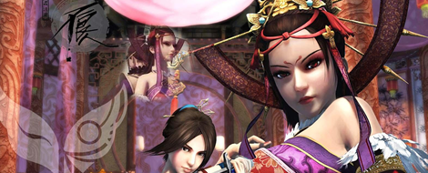
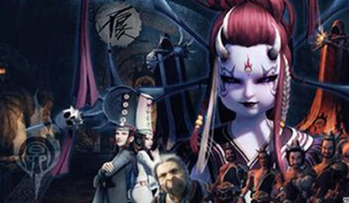
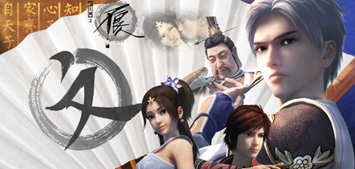
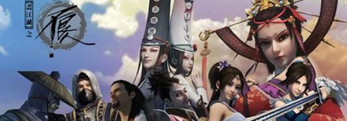

势力介绍
玄冥教 朱温手下号称天下第一暗杀组织，行事诡秘，武功邪门，等级森严，好装神弄鬼。
朱温长子朱友珪武功高强，改装易容，隐藏身份成为玄冥教首领——冥帝。明里受命于朱温，为其羽翼，暗里扶植党羽，以夺帝位。但早已被不良人渗透进去。朱友珪，玄冥教冥帝，朱温长子，自幼练邪功走火入魔，变成侏儒身材，乖僻阴邪，无情无义。欲将其父朱温杀死自己登上皇位，却因不想背负杀父弑君的罪名迟迟未动。先后派遣黑白无常和五大阎君夺取龙泉剑。无常与阎君内斗时决定坐山观虎斗，秉承玄冥教适者生存的宗旨。后在焦兰殿与不良帅对战不敌被散去内力，不愿做亡国之君自杀身亡。

幻音坊以岐王化名的女帝为尊，坊中高手尽是色艺俱佳的年轻女子，以歌舞姬的身份迷惑目标，刺探情报或直接行刺，手中乐器全都暗藏机关，令人防不胜防。


